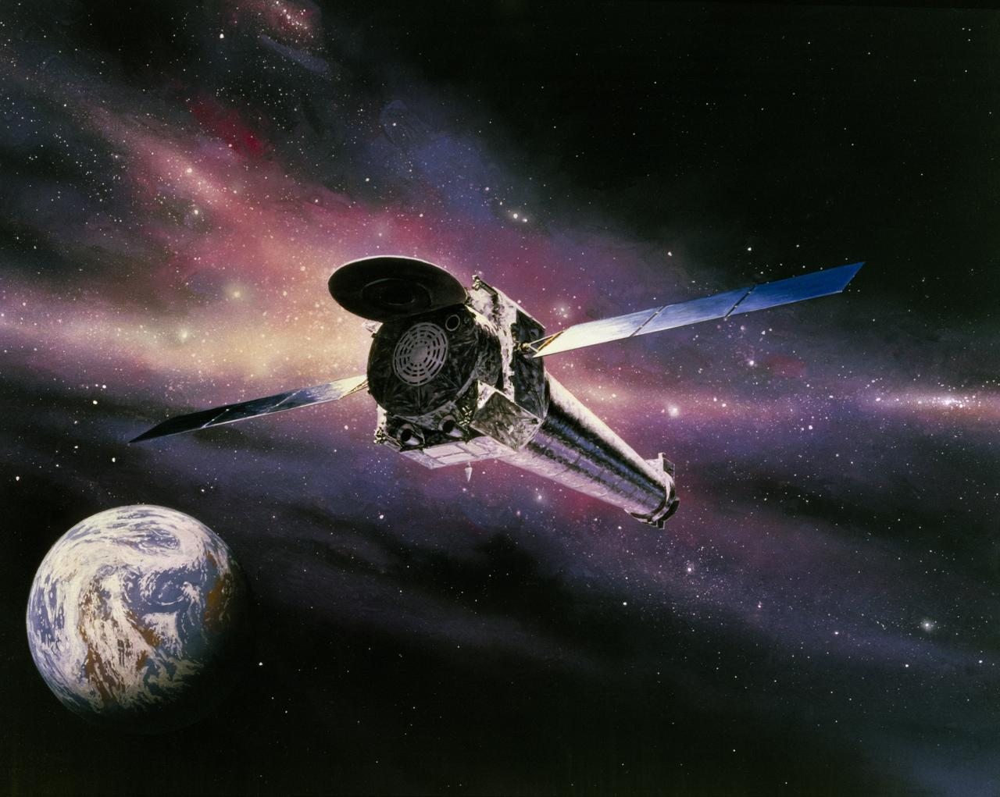

Chandra, uzaydaki çok sıcak bölgelerden, kara deliklerin çevresinden ve süpernova patlamalarından gelen
X ışınlarını incelemek için tasarlanmıştır.
X ışınları normal aynalara doğrudan çarptığında içlerinden geçebildiği için
Chandra'nın aynaları, ışınları çok dar bir açıyla yansıtacak biçimde özel olarak tasarlanmıştır.
Böylece teleskop, gözle görülmeyen X ışınlarını bilimsel cihazlarla ölçebilir.

Görsel: NASA